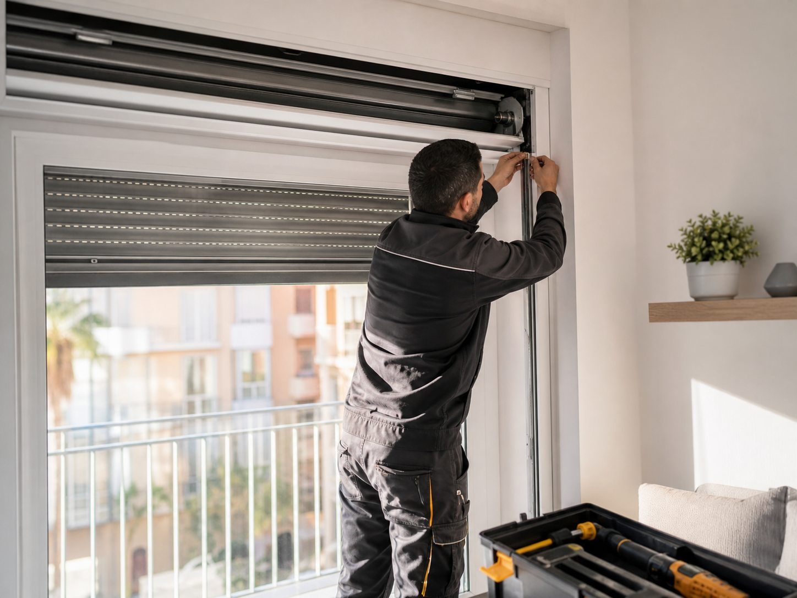

Primero localizamos el origen real del fallo
Una persiana puede atascarse por cinta, eje, lama desplazada, recogedor o motor. Revisarlo bien evita cambiar piezas sin necesidad.
Si tu persiana se atasca, pesa demasiado, no sube o no baja bien, revisamos el problema y te proponemos una reparación clara antes de tocar nada.

Una persiana puede atascarse por cinta, eje, lama desplazada, recogedor o motor. Revisarlo bien evita cambiar piezas sin necesidad.
Si basta con ajustar o sustituir una pieza, se hace. Si la persiana está demasiado dañada, te explicamos la alternativa.
Subida, bajada, cierre y recorrido deben quedar correctos para que vuelvas a usarla con tranquilidad.
Con el uso diario y el paso del tiempo, las persianas pueden empezar a fallar: se atascan, cuesta subirlas o bajarlas, hacen ruido o se quedan bloqueadas a media altura. En Persianas Zambrana nos dedicamos a diagnosticar y reparar este tipo de averías en persianas de viviendas, locales y comercios de Málaga.
Revisamos el estado de la cinta, el recogedor, las lamas y el mecanismo interno para identificar el origen del problema y proponerte la solución más práctica, ya sea un ajuste, una reparación o la sustitución de una pieza concreta.
Si te identificas con alguno de estos casos, podemos ayudarte.
Persiana atascada que se ha quedado bloqueada y no se mueve.
No sube o se queda a media altura al intentar recogerla.
No baja correctamente o se queda enganchada.
Mecanismo dañado o desgastado que impide el uso normal.
Ruidos o roces al subir y bajar que indican un mal funcionamiento.
Cinta o recogedor que han dejado de funcionar bien.
Respondemos a tu aviso y valoramos la solución cuanto antes, según disponibilidad.
Somos de Málaga: trato cercano y conocimiento de las persianas más habituales de la zona.
Te proponemos reparar o sustituir solo lo necesario, con claridad y sin sorpresas.
Llámanos o escríbenos por WhatsApp describiendo qué le ocurre a tu persiana.
Revisamos el caso y te indicamos la solución más adecuada y su alcance.
Realizamos la reparación para que vuelva a funcionar con normalidad.
Contacta con Persianas Zambrana y te ayudamos a que vuelva a funcionar. Atención directa por teléfono y WhatsApp en Málaga.
En la mayoría de casos sí. Una persiana atascada suele deberse a la cinta, al recogedor o al mecanismo. Lo valoramos y te indicamos la mejor solución.
Sí, trabajamos tanto con persianas manuales como motorizadas. Cuéntanos el problema y te orientamos.
Sí. Valoramos la avería y te explicamos la solución propuesta antes de intervenir, para que decidas con claridad.
Depende del tipo de avería. Muchas reparaciones se resuelven en una sola visita, aunque algunas pueden requerir sustituir piezas concretas.